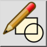
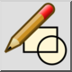

Menu: Blok > Uredi blok z referenco
Shortcut: B, D
Commands: blockeditfromreference | bd
Toolbar / Icon:
 

Menu: Blok > Uredi blok z referenco
Shortcut: B, D
Commands: blockeditfromreference | bd
Opis:
S tem orodjem lahko urejamo blok na katerega kaže izbrana blokovna referenca. To je v praksi uporabno, ko ime bloka ni znano.